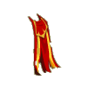
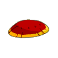
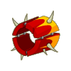
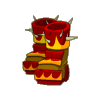
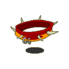
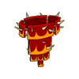

| Niveau 130 | Cape Ceremoniale du Seigneur des Rats | ||
|---|---|---|---|
|  | Recettes : | Caractéristiques : | Conditions : |
| 21 Etoffes de kanigrou 10 Etoffes du rat blanc 10 Etoffes du rat noir 4 Peaux de sphincter cell 2 Epaulettes de Dark Vlad 2 Cotons ancestraux 1 Cape du rat noir 1 Cape du rat blanc |
+101 à 150 vitalité +31 à 45 agilité +16 à 30 intelligence +11 à 20 sagesse +1 portée +11 à 15 prospection +4 à 6 dommages +4 à 6 soins 5 à 7% résistance air 5 à 7% résistance feu +4 à 6 résistance air +4 à 6 résistance feu |
||
| Remarques : | |||
| Niveau 133 | Masque Ceremonial du Seigneur des Rats | ||
|---|---|---|---|
|  | Recettes : | Caractéristiques : | Conditions : |
| 200 Poils de kanigrou 50 Pattes de prespic 6 Poils de chaman d'egoutant 5 Plumes graisseuses du tofu ventripotent 2 Peaux de sphincter cell 1 Etoffe de sphincter cell 1 Masque du rat noir 1 Coiffe du rat blanc |
+151 à 200 vitalité +31 à 50 agilité +21 à 30 intelligence +11 à 20 sagesse +11 à 15% dommages +4 à 6 dommages +5 à 7 soins +6 à 10 prospection +4 à 6 résistance terre +4 à 6 résistance eau 5 à 7% résistance terre 5 à 7% résistance eau |
aucune | |
| Remarques : | |||
| Niveau 131 | Anneau Cérémonial du Seigneur des Rats | ||
|---|---|---|---|
| Recettes : | Caractéristiques : | Conditions : | |
|  | 20 Sang d'oni 6 Cubitus du rat noir 3 Ambre ancestrale 2 Fémur de sphincter cell 1 Anneau du rat noir 1 Gantelet du rat blanc 1 Bracelet de force de trool 1 Kolérat mort |
+101 à 130 vitalité +26 à 40 agilité +6 à 10% dommages +11 à 15 prospection +3 à 4 CC +4 à 6 dommages 5 à 7% résistance air +5 à 7 résistance feu +5 à 7 résistance terre |
aucune |
| Remarques : | |||
| Niveau 134 | Bottes Cérémoniales du Seigneur des Rats | ||
|---|---|---|---|
| Recettes : | Caractéristiques : | Conditions : | |
|  | 100 Boues de Boo 50 Peaux de shaman d'Egoutant 50 Crocs de rats 40 Sabots de bouftou 20 Sabots de chef de guerre bouftou 3 Peaux de sphincter cell 1 Bottes du rat noir 1 Bottes du rat blanc. |
+1 PM +121 à 170 vitalité +26 à 40 agilité +21 à 35 intelligence +16 à 25 sagesse +5 à 7 soins +5 à 7 dommages +6 à 10 prospection 4 à 6% résistance neutre 4 à 6% résistance terre +4 à 6 résistance neutre |
|
| Remarques : | |||
| Niveau 134 | Collier Cérémonial du Seigneur des Rats | ||
|---|---|---|---|
| Recettes : | Caractéristiques : | Conditions : | |
|  | 100 Poil de rat d'egoutant 100 Dent de karne 50 Croc de rats 5 Fémur de sphincter cell 5 Poil de chaman d'egoutant 1 Etoffe de péki 1 Collier du rat blanc 1 Collier du rat noir |
+1 PA +101 à 150 vitalité +26 à 40 agilité +16 à 30 intelligence +16 à 25 sagesse +6 à 10 dommages +201 à 400 initiative +11 à 15 prospection 6 à 10% resistance neutre |
aucune |
| Remarques : | |||
| Niveau 133 | Ceinture Cérémoniale du Seigneur des Rats | ||
|---|---|---|---|
| Recettes : | Caractéristiques : | Conditions : | |
|  | 100 Crocs de rats 50 Peaux de shaman d'egoutant 5 Peaux de rat d'egoutant 5 Poils de shaman d'egoutant 3 Peaux de sphincter cell 1 Ceinture du rat noir 1 Ceinture du rat blanc 1 Slip de trool |
+151 à 200 vitalité +31 à 50 agilité +16 à 30 intelligence +16 à 25 sagesse 6 à 10% dommages +6 à 10 dommages +1 créature invocable +500 pods 5 à 8% résistance eau +6 à 10 résistance eau +6 à 10 résistance neutre |
aucune |
| Remarques : | |||
| 1 Items | Aucun bonus |
|---|---|
| 2 Items | +20 Vitalité |
| 3 Items | +40 Vitalité / +10 Intelligence / +10 Agilité |
| 4 Items | +60 Vitalité / +20 Intelligence / +20 Agilité |
| 5 Items | +80 Vitalité / +35 Intelligence / +35 Agilité / +10 Sagesse |
| 6 Items | +1 PM / +100 Vitalité / +50 Intelligence / +50 Agilité / +20 Sagesse |
Dofus est un MMORPG édité par Ankama." Barbok " est un site non-officiel sans aucun lien avec Ankama.
Toutes les illustrations sont la propriété d'Ankama Studio et de Dofus. Le contenu de ce site a été rédigé initialement par Immortal, il ne s'agit que d'une remise en ligne effectuée par Eternal Games.